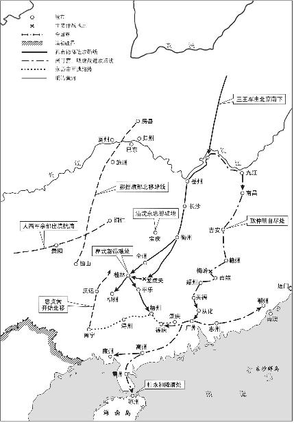

第一节孔有德、耿仲明、尚可喜统兵南下
1648年（顺治五年）清廷在姜瓖、金声桓、李成栋掀起的反清浪潮下，深感满洲兵力有限，决定起用孔有德、耿仲明、尚可喜三王统兵南下。这年十二月，多尔衮派使者召孔有德、耿仲明、尚可喜从辽东入京。次年四月，三人到达北京1579。五月十九日，清廷下诏改封恭顺王孔有德为定南王、怀顺王耿仲明为靖南王、智顺王尚可喜为平南王。同一天“令定南王孔有德率旧兵三千一百，及新增兵一万六千九百，共二万，往剿广西，挈家驻防，其全省巡抚、道、府、州、县各官并印信俱令携往。靖南王耿仲明率旧兵二千五百，及新增兵七千五百；平南王尚可喜率旧兵二千三百，及新增兵七千六百，共二万，往剿广东，挈家驻防，其全省巡抚、道、府、州、县各官并印信俱令携往”1580。当部署三王南下时，清廷原来的意图是命孔有德征福建，耿仲明取广东，尚可喜攻广西。尚可喜明知自己和耿仲明部下兵马都不过两千余名，加上新增兵也只有一万，难以承担攻取一省的任务，建议增强兵力，缩短战线。孔有德傲慢自大，嗤笑尚可喜胆小怯懦，自告奋勇独力攻取广西。清廷会议后决定耿、尚合兵进取广东，孔有德率部进攻广西1581。三王藩下将领的设置是：定南王下以缐国安任左翼总兵官，曹得先为右翼总兵官，另调湖广辰常总兵马蛟麟为随征总兵；靖南王下以徐得功为左翼总兵官，连得成为右翼总兵官；平南王下以许尔显为左翼总兵官，班志富为右翼总兵官。

部署既定，孔、耿、尚三人即率旧部下江南，会合浙江、湖广等地调集的兵马。孔有德由湖南向广西进军；耿仲明、尚可喜则取道江西入粤。
1649年（顺治六年）十一月初二日，靖南王耿仲明部驻吉安，平南王尚可喜驻临江（府治在今樟树市），二人商定十二月初三日出师南进。就在这时满洲贵族向清廷控告耿仲明、尚可喜率兵南下时收留了“逃人”一千多名，清廷派去严厉追查。耿仲明知道触犯了朝廷的深忌，唯恐受到“窝藏逃人法”的惩办，十一月二十七日在吉安自杀。清廷原拟将尚可喜、耿仲明削去王爵，各罚银五千两；多尔衮考虑到正在用人之际，以“航海投诚”有功为名决定免削爵，罚银减为四千两。耿仲明畏罪自杀的消息传到北京后，清廷决定平南、靖南二藩兵力由尚可喜负主要责任，耿仲明之子耿继茂仅以阿思哈哈番职位统率其父旧部充当尚可喜的助手1582。
注释
- 1579顺治六年二月三十日恭顺王孔有德“为恭谢天恩敬报起行日期”揭帖中说，他已定于三月二十七日率部就道进发。见《明清档案》第十册，A10—31号。这是指他带领部众由辽东开拔的时间。
- 1580《清世祖实录》卷四十四。
- 1581《平南王元功垂范》卷上。孔有德在顺治九年四月死到临头时还在疏中自我吹嘘道：“臣谬辱廷推，驻防闽海。同时有固辞粤西之役者（指尚可喜）。……臣自念受恩至渥……故毅然以粤西为请。”见《清史列传》卷七十八《孔有德传》。
- 1582为尚可喜歌功颂德的《平南王元功垂范》中说：“前此王未尝特将。自靖南薨，战守方略一出王指授。……王好让，尝曰：入关以来，有豫、英诸王；下湖南有恭、怀二王在，吾何力之有焉。”事实上，命将出自朝廷，尚可喜不过以谦逊自诩罢了。耿继茂袭封靖南王在顺治八年四月，见《清世祖实录》卷五十七。